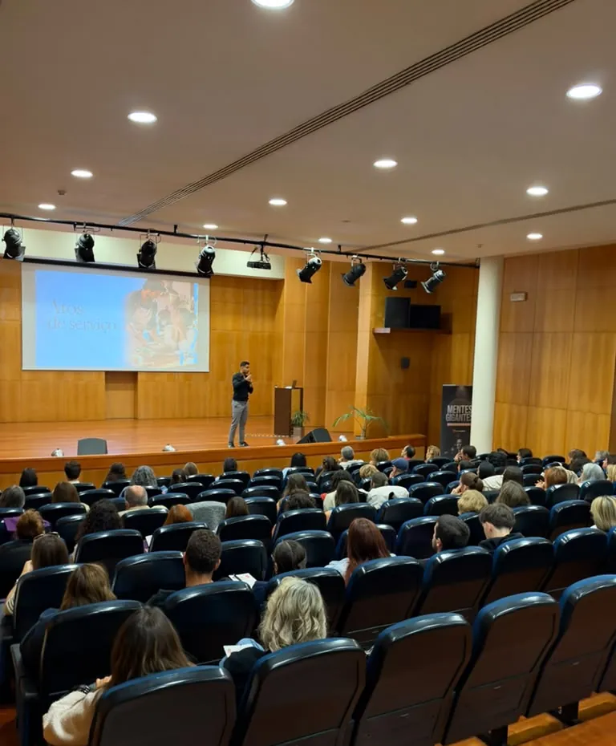
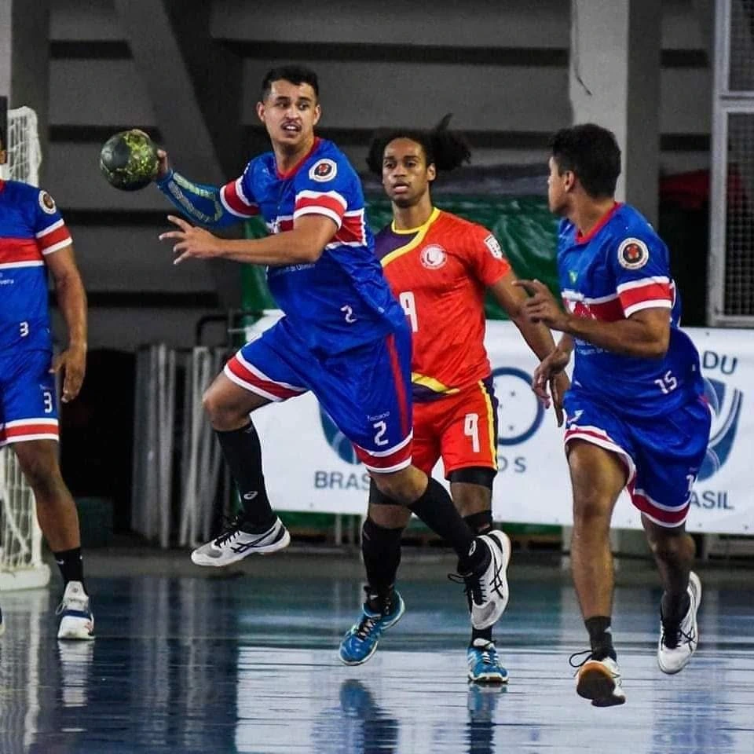
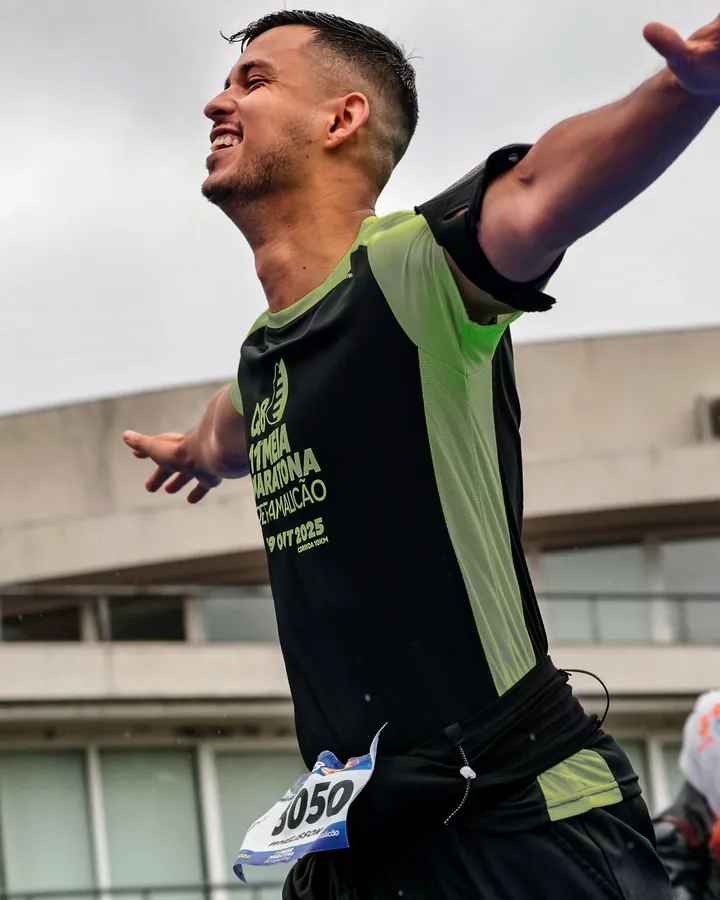

Saber Não basta
Tu sabes o que tens de fazer para crescer. Neste dia descobres porque não fazes, e como mudar isso antes de 2027.
Com Whelisson Santos, ex-atleta profissional e especialista em alta performance.
Deixa estas frases à porta
Se uma destas frases é tua, esta tarde foi pensada para ti.
Para empresários, autónomos, vendedores e profissionais liberais, e para quem não aguenta mais viver uma vida sem resultados.
- “Amanhã começo.”
- “Ainda não estou pronto.”
- “Este mês foi fraco, o próximo é que vai ser.”
- “Tenho de pensar melhor antes de avançar.”
- “Os outros têm menos capacidade e estão a crescer mais do que eu.”
O que levas daqui
Saber, toda a gente sabe, mas fazer é emocional.
Em 4 horas vais
- 01Reconhecer os padrões que te fazem começar, parar e adiar.
- 02Dominar o teu estado, porque a qualidade das tuas decisões depende da energia em que as tomas.
- 03Entender o poder da tua identidade, a de quem age com medo e repete até ganhar.
- 04Sair mais confiante e com as decisões que andas a adiar tomadas.

Quem te conduz
Whelisson Santos
Ex-atleta profissional de andebol, vice-campeão brasileiro e multicampeão no Rio de Janeiro, jogou em mais de 10 estados do Brasil. Hoje é especialista em alta performance e meio maratonista.
Tinha energia para começar tudo e dificuldade em terminar, até aprender a governar isso. Hoje ajudo empresários e profissionais que vivem do próprio resultado a fazer o mesmo.


No desporto aprendi cedo o que muitos empresários descobrem tarde: o resultado é de quem repete.
Inscrição
Queima os barcos.
Lugares limitados.
- DATA
- 5 de dezembro
- HORA
- das 14:00 às 18:00
- LOCAL
- Orbit, Linda Velha
Largo da Lagoa 15, Lisboa, Portugal
Antes de decidires
Perguntas frequentes
Para quem é esta tarde?
É para quem vive do próprio resultado, como empresários, autónomos, vendedores e profissionais liberais, e para quem não aguenta mais viver uma vida sem resultados. Não precisas de ter empresa.
O que levo para casa no fim?
Sais a reconhecer os padrões que te travam, mais confiante e com as decisões que andavas a adiar tomadas.
Quanto tempo dura?
São 4 horas, das 14:00 às 18:00.
Onde é exatamente?
No Orbit, no Largo da Lagoa 15, em Linda-a-Velha. Tens o mapa logo acima, na secção de inscrição.
Como garanto o meu lugar?
Carregas em "Garantir o meu lugar" e fazes a inscrição. Os lugares são limitados, por isso não deixes para a última hora.
Tenho outra dúvida, com quem falo?
Fala comigo pelo WhatsApp, no link "Tenho uma dúvida" que está na secção de inscrição.